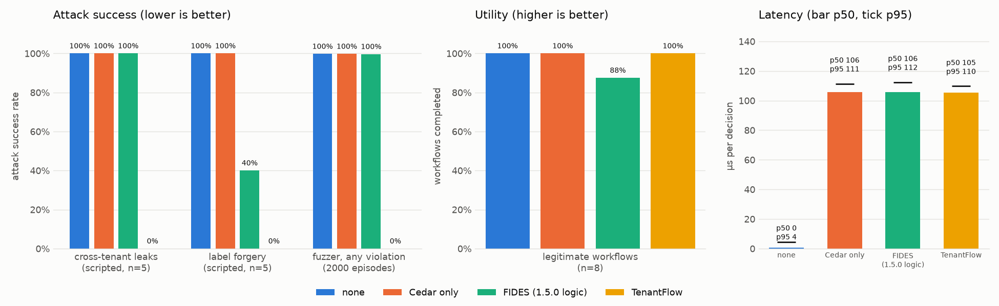

Cedar checks each AI agent call on its own. TenantFlow stops the leaks that happen across calls, with a Lean proof of isolation.
A bank and an insurer share one AI platform and one search index. Three agent calls, each allowed by Cedar:
Cedar only
✗ Bank data reaches the insurer
Cedar + TenantFlow
✓ The insurer never sees bank data
5/5 → 0/5
cross-tenant leaks 5/5 → 0/5
label forgeries 8/8 → 8/8
legitimate tasks still work Lean 4
isolation proven: Model.isolation
Benchmark scenarios, Cedar only → Cedar + TenantFlow (seed 1, revision 8caa375); TenantFlow’s zeros are what the theorems predict, not independent evidence. The proof holds for every agent behaviour and every Cedar policy under the assumptions listed under “What the proof covers” (trusted session and tool registry, complete mediation, no side channels).
A bank and an insurer run their AI agents on the same platform and search the same index.
An agent can be steered by any text it reads. So we treat every agent as the attacker.
The request
principal insurer agent, role analyst action call:vault
The policy
The answer: deny, because no rule permits it.
Optional: drag the vault onto the insurer agent.
Cedar sees one request. It does not know what the agent read before.
Each step passes Cedar; the leak is in the sequence. Under TenantFlow the same write is allowed, but the insurer’s search no longer returns the bank’s entry. Try it: Next step, then switch to TenantFlow.
From trusted metadata, never from the data
| read from | label |
|---|---|
| bank vault | bank |
| insurer document | insurer |
| web ticket | untrusted |
An agent’s label is the join of everything it read
bank ⊔ insurer = bank + insurer
Data may go to tenant u only if every owner in the label is u.
A document keeps its writer’s label. A helper starts with its parent’s label. Labels only grow.
Lean: Model.no_launder (labels dominate their sources), Model.ctx_mono (labels only grow), Model.child_ctx_eq (helpers inherit).
The ticket the agent passes on:
FIDES: for a tool without a trust declaration, the result label comes from labels in the arguments. Missing fields default to trusted.
TenantFlow: labels come only from the tool registry. A reply from outside stays untrusted.
Found by APIsec Labs (MSRC case 126767: forgery confirmed, closed as defense-in-depth). A bypass needs their PoC conditions (auto-hide of untrusted results off, context not yet untrusted); “FIDES” here is our re-implementation of the 1.5.0 label logic. Benchmark suite 2: FIDES 2/5 (exactly the PoC cases), TenantFlow 0/5.
For every reachable state, every tool call \(e\), every tenant \(u\) that observes \(e\), and every piece of data \(o\) that \(e\) may depend on:
\[\mathrm{readable}\big(u,\ \mathrm{label}_0(o)\big)\]
Extracted from lean/TenantFlow/Proofs.lean at render time.
Whatever the agent does, and whatever the Cedar policy says.
Proven in Lean 4 (no sorry)
Model.isolation, Model.isolation_intModel.no_launderModel.noninterference, also for the executable monitor: Exec.noninterferenceExec.refinesModel.transparencyAssumed, not proven
denied, not the reason (A8)Tested, not proven: the Python and JavaScript monitors (against the Lean oracle), and that the monitor never reads a label out of a payload (by construction). Nothing is claimed about Cedar itself.
🤖 Agent → 🪪 Gateway
session → tenant, role → 📜 Cedar
allow / deny per call → 🏷️ Flow monitor
labels, checks every output → 🗂️ Tools + shared index
labelled by the adapter
Cedar keeps least privilege per call. Isolation comes from the monitor.
The Lean oracle runs Exec.step; the Python monitor (gateway) is tested against it on hundreds of random scenarios per run, the JavaScript monitor (game) on 2 400.

| leaks | forgery | utility | |
|---|---|---|---|
| Cedar only | 5/5 |
5/5 |
8/8 |
| FIDES logic | 5/5 |
2/5 |
7/8 |
| TenantFlow | 0/5 |
0/5 |
8/8 |
Utility is measured; its proven counterpart is (e) Model.transparency (agents that read only their own tenant’s trusted data and call only tenant-private tools).
Random attacker, 2000 runs: any violation in 99.8 % (Cedar only) vs 0 % (TenantFlow).
Read with care: TenantFlow’s 0 is what the theorems predict (same label definitions), not independent evidence. Baselines are saturated by design; suites are small (n = 5–8). Latency per decision p50 ≈ 105 µs, almost all of it the Cedar call; the monitor alone (Cedar stubbed) p50 0.5 µs, p99 6.1 µs. Seed 1, revision 8caa375, bench/results/results.json.
Without --enforce, it searches your Cedar policy for an allowed call sequence that crosses tenants and prints it. A bounded search, not a proof.
Related work: Cedar and its Lean formalisation, cedar-for-agents, AWS AgentCore Policy, LLMbda, FIDES, APPA, SPA, CaMeL (docs/related-work.md).
TenantFlow · guarantees hold in the Lean model under the stated assumptions · synthetic data